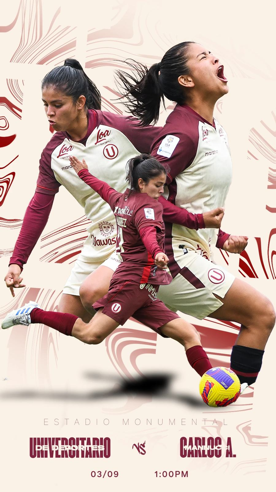

Archive · 12 projects
Archive
Campaign video, live photography, sports design, brands, web and gaming. All printed and taped up here.
 Sam Gallucci & NH Senate RepublicansPolitical video · 2026 · 900K+ views
Sam Gallucci & NH Senate RepublicansPolitical video · 2026 · 900K+ views
 Bobby Charles for Maine GovernorPolitical video · 2026 · 436K+ views
Bobby Charles for Maine GovernorPolitical video · 2026 · 436K+ views
 MercyMe 2025Live photography · 2026 · 22 photos
MercyMe 2025Live photography · 2026 · 22 photos
 Crowder LiveLive photography · 2026 · 22 photos
Crowder LiveLive photography · 2026 · 22 photos
 for KING & COUNTRYLive photography · 2026 · 16 photos
for KING & COUNTRYLive photography · 2026 · 16 photos
 Matchday's 2022–23Sports design · 2023 · 22 posters
Matchday's 2022–23Sports design · 2023 · 22 posters

Nahomi Martínez Matchday'sSports design · 2023 · 16 posters Luis Benites Matchday'sSports design · 2023 · 15 posters
Luis Benites Matchday'sSports design · 2023 · 15 posters
 Qatar 2022Branding and social · 2022 · 37 pieces
Qatar 2022Branding and social · 2022 · 37 pieces
 Physo · Physical therapy centerBranding and social · 2024 · 30 posts
Physo · Physical therapy centerBranding and social · 2024 · 30 posts
 Zena Coffee StoreWeb and UI · 2024 · 2 screens
Zena Coffee StoreWeb and UI · 2024 · 2 screens
 Valorant Multicolor OverlaysGaming · 2022 · 3 screens
Valorant Multicolor OverlaysGaming · 2022 · 3 screens